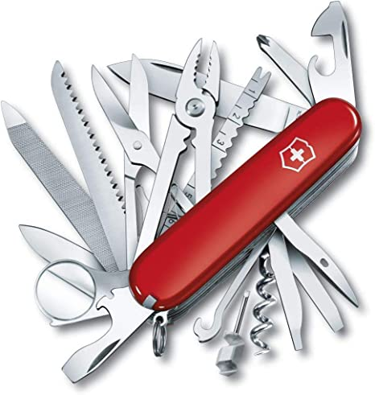

کد سوئیسی (main args)
- محدودیت زمان: ۱ ثانیه
- محدودیت حافظه: ۲۵۶ مگابایت
بیاین برگردیم به تقریبا صدسال پیش، اون موقع که هیتلر و چرچیل و استالین داشتن دورِهم میجنگیدن(!)، که الان به اسم جنگ جهانی دوم ازش یاد میکنیم!
اون موقع ارتش سوئیس، یه چاقو ی باحال داشتن که بهش میگفتن Offiziersmesser ( تونستی بخونی اسمشو؟ ) تلفظ این کلمه خیلی سخت بود برای همین آمریکایی ها یه اسم خیلی ساده روش گذاشتن ، بهش میگفتن "Swiss Army Knife" . خدا خیرشون بده:)) .
"چاقو ارتش سوئیس" یک چاقو جیبی همه کاره اس که یه عالمه وسیله های مختلف مثل تیغ، اره چوب، قیچی، سیم بر، قوطی باز کن و ... تو خودش جا داده.  حالا بیاین برگردیم به زمان حال، که جنگ جهانی سوم شده و اصغر، سرباز شجاع و فداکار، میخواد از کشورش محافظت کنه و برای این کار به کمک ما نیاز داره. اون باید یه برنامه ای بنویسه که مثل چاقو ی همه کاره برای رشته ها (Strings) عمل کنه.
یعنی باید یه سری رشته رو از کاربر بگیره و با توجه به اینکه کاربر چه آپشنی رو انتخاب کرده یه سری کارا رو براش بکنه.
آپشن هایی که چاقو ی ما داره چیا هستن؟
- Palindrome (-p, --palindrome) :
ما به رشته ای میگیم palindrome که قرینه باشه، یعنی از هر طرفی بخونیش همون بشه!
مثلا رشته های "madam" و "racecar" و "bcb" پالیندروم هستند ولی رشته هایی مثل "milk" و "a bh hba" پالیندروم نیستند.
- Find (-f, --find):
دو تا رشته بگیره ، ببینه رشته اول تو دومی هست یا نه؟ (توضیح بیشتر در مثال های پایین هست)
- Reverse (-r, --reverse):
یه رشته بگیره و برعکسش کنه . مثلا وقتی رشته "reverse123" رو میگیره ، رشته "321esrever" رو خروجی بده.
- Sort (-s, --sort) :
چنتا رشته بگیره و اونا رو برحسب الفبا مرتب کنه. مثلا وقتی رشته های "amain" و "fabric" و "bill" و "amnesia" رو میگیره باید این ترتیب رو خروجی بده: amain , amnesia , bill , fabric
- Concatenate (-c, --concatenate):
تمام رشته های ورودی را به هم می چسباند و یک رشته واحد درست میکند.
- Help (-h, --help):
اگر به برنامه این دستور داده شود برنامه تمام آپشن هایی(palindrome, find, ...) که دارد را برای کاربر چاپ میکند.
ورودی و خروجی🔗
کاربر یکی از آپشن های بالا را قبل از اجرای برنامه انتخاب کرده و رشته های خود را به صورت زیر به برنامه میدهد. دقت کنید که آپشن هایی که کد ما داره همون موقع اجرای برنامه بهش داده میشن (نه در زمان اجرا !)
دقت کنید که هر کدام از آپشن ها بجز find میتوانند تعداد مختلفی رشته (string) ورودی داشته باشند.
مثال از help:
ورودی:
خروجی:
مثال از palindrome:
ورودی:
خروجی:
مثال از sort:
ورودی:
خروجی:
مثال از Reverse:
ورودی:
خروجی:
مثال از find:
ورودی:
خروجی:
مثال از concatenate:
ورودی:
خروجی: